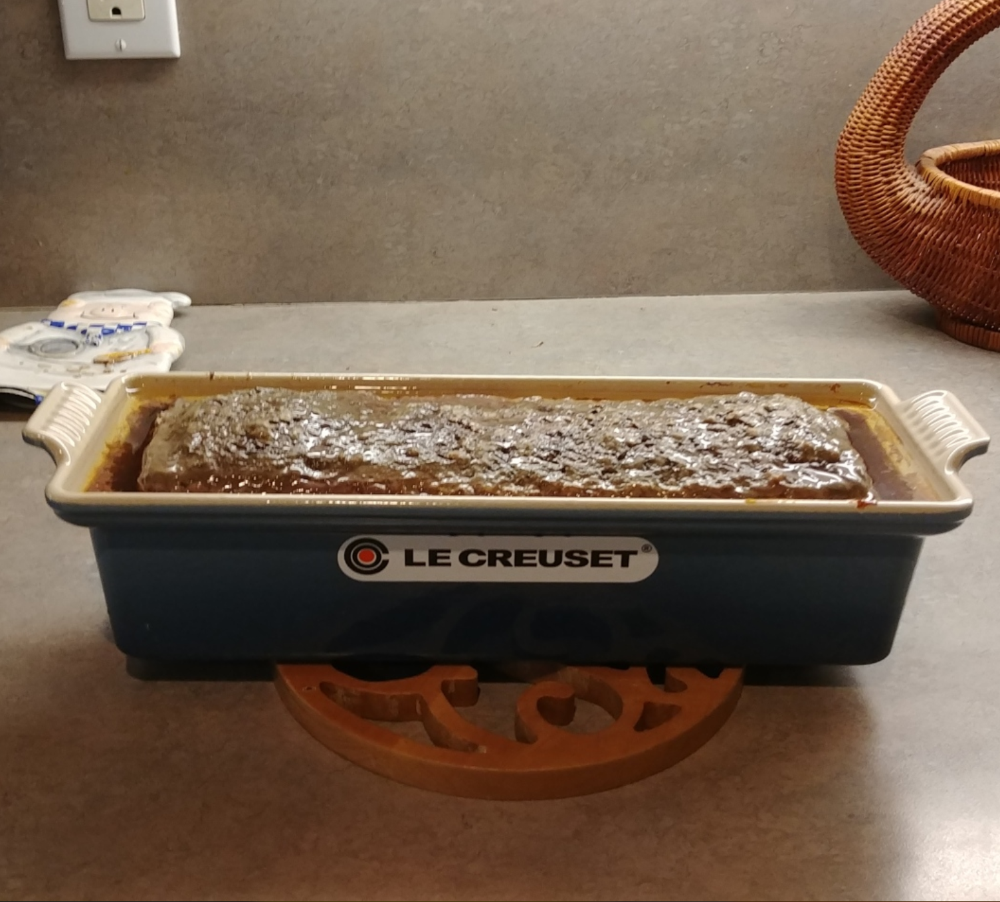

Pâté de Campagne

Ingredients
- 1 lb pork liver
- 2 cloves garlic
- 1 tsp thyme
- 2 tsp black pepper
- 2 tsp tender quick curing salt
- 1½ lb ground pork
- ¼ C white wine
Directions
- Prep Oven: Preheat oven to 325°F.
- Blend Liver: Process liver, garlic, seasonings, and wine until the mixture is smooth and soupy.
- Mix Pork: Pour liver mixture over ground pork and mix thoroughly to combine.
- Assemble Terrine: Transfer mixture to a terrine mold and top with bay leaves and thyme.
- Bake: Cover and bake in a bain-marie filled to ¾ height at 325°F for 2½ hours.
- Chill: Cool completely, then refrigerate overnight.
- Serve: Slice and serve with crusty bread, black olives, cornichons, and French mustard.
The Gumbo Page
Michael Fritsche
mbf@fritsche.org